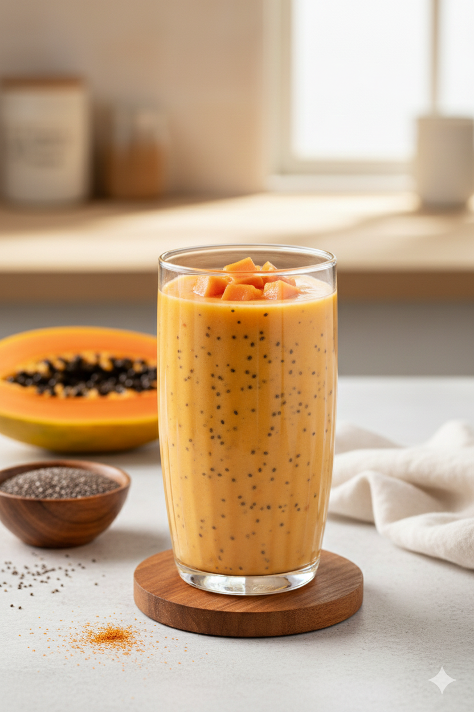

"Tropical Vitality" Papaya Shake

Image generated with AI
Description
The "Tropical Vitality" Papaya Shake is a nutrient-packed powerhouse designed for those looking to optimize muscle
recovery and gain mass through natural, whole foods. Papaya is famous for its digestive enzymes that help your body
process nutrients more efficiently, while the combination of oats and peanut butter provides the sustained energy and
healthy fats needed for growth. This shake is thick, exotic, and incredibly refreshing—the perfect way to fuel your
gains without artificial additives.
Ingredients
- 1 cup fresh ripe papaya, peeled and cubed (approx. 1/2 a medium papaya).
- 1/2 cup rolled oats (complex carbohydrates for sustained fuel).
- 2 tablespoons creamy peanut butter(for healthy fats and natural protein).
- 1 1/2 cups whole milk (or soy milk for a high-protein dairy-free option).
- 1 teaspoon chia seeds (optional, for extra Omega-3 and fiber).
- Ice cubes (optional, for a chilled, smoothie-like consistency).
Steps
- Mill the oats: For an extra-smooth finish, blend the dry oats first until they reach a fine, flour-like consistency.
- Add the fruit and fats: Place the fresh papaya cubes and the two generous tablespoons of peanut butter into the blender.
- Combine liquids: Pour in the milk and add the chia seeds (if using) along with the ice cubes.
- Blend: Process on high speed for 60 to 90 seconds until the mixture is completely velvety and homogeneous.
- Serve: Pour into a tall glass. You can garnish with a few small papaya chunks on top for a professional look.